Manual de usuario
Bodega en GESPRO
Para el bodeguero y el jefe de bodega: cómo entra el material a la obra contra su orden de compra, cómo sale a cada partida con un vale y cómo se cuenta la bodega sin ver la cifra del sistema.
- Roles en GESPRO
- Bodeguero · Jefe de bodega
- Sus pantallas
- Recepciones · Vales de salida · Stock y kardex · Inventarios
- Ejemplos con
- Luis Cárcamo y Héctor Sandoval · obra 1201 Edificio Mirador del Lago
1El material en la obra
La bodega es donde la compra se vuelve costo. Lo que llega entra al precio de la orden; lo que sale a una partida se carga a esa partida al precio promedio del momento. Los pasos destacados son los de este manual.
- Orden emitidaAbastecimiento la envía al proveedor.
- RecepciónEl bodeguero registra lo que llegó, con su guía.
- VisaciónEl jefe de bodega y el profesional de obra la aprueban.
- StockLo inventariable queda en bodega a su precio promedio.
- Vale de salidaEl material sale a una partida y se vuelve costo.
- InventarioSe cuenta a ciegas y cada diferencia se explica.
- FacturaFinanzas la registra contra la recepción.
| Quién | Qué hace en GESPRO |
|---|---|
| Bodeguero | Recibe contra la orden o por compra directa, entrega con vales, registra devoluciones, pide traspasos y préstamos, y cuenta los inventarios. |
| Jefe de bodega | Visa recepciones, traspasos y préstamos; arma los inventarios y explica sus diferencias; anula recepciones y vales; administra las bodegas de la obra. |
| Profesional de obra | Da la última firma de la recepción y visa el inventario junto con control de gestión. |
2Lo que falta llegar
En Bodega › Recepciones › Pendiente de recibir están las líneas de las órdenes emitidas que todavía no llegan completas, ordenadas por la fecha en que la obra las necesita. Es la lista para el día: lo que debería aparecer en la puerta.

- Cada línea pendiente: fecha requerida, orden, proveedor, recurso y partida.
- La orden, para ver sus condiciones y su PDF.
- Pendiente: lo pedido menos lo ya recibido en recepciones confirmadas.
3Recibir contra la orden
Cuando llega el camión, el bodeguero abre Bodega › Recepciones y crea la recepción. GESPRO trae las líneas de la orden con lo que falta recibir, así que solo se corrige lo que llegó distinto.
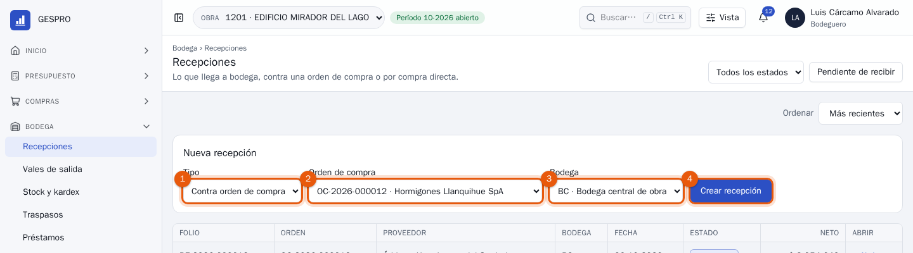
- Tipo: Contra orden de compra, o Compra directa si no hubo orden (por ejemplo, una compra menor en ferretería).
- La orden de compra. Solo aparecen las emitidas que aún tienen algo por llegar.
- La bodega donde entra el material.
- Crear recepción abre el borrador con las líneas de la orden.
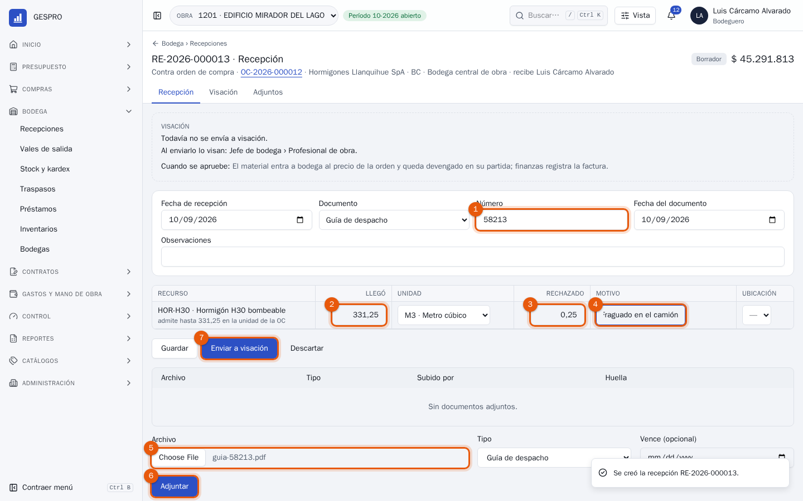
- El documento con que llegó: guía de despacho o factura, con su número y fecha. Sin número no se puede enviar a visación.
- Llegó: la cantidad que bajó del camión. Debajo, cuánto admite todavía la orden, con su tolerancia.
- Rechazado: lo que llegó pero no se acepta. No entra a bodega ni a costo.
- Motivo del rechazo. Es obligatorio cuando hay algo rechazado.
- La guía escaneada o fotografiada, en PDF o imagen.
- Adjuntar la sube al documento. Queda con su huella y nadie la reemplaza: una versión nueva se suma a la anterior.
- Enviar a visación guarda y manda la recepción al jefe de bodega.
El hormigón se carga directo a su partida, porque no se guarda en bodega. Un recurso que controla stock, como el ladrillo, entra a bodega y se vuelve costo recién cuando sale con un vale.
4Visar la recepción
La recepción la visan el jefe de bodega y después el profesional de obra. Llega a la Bandeja de pendientes de cada uno; desde ahí se abre la ficha.
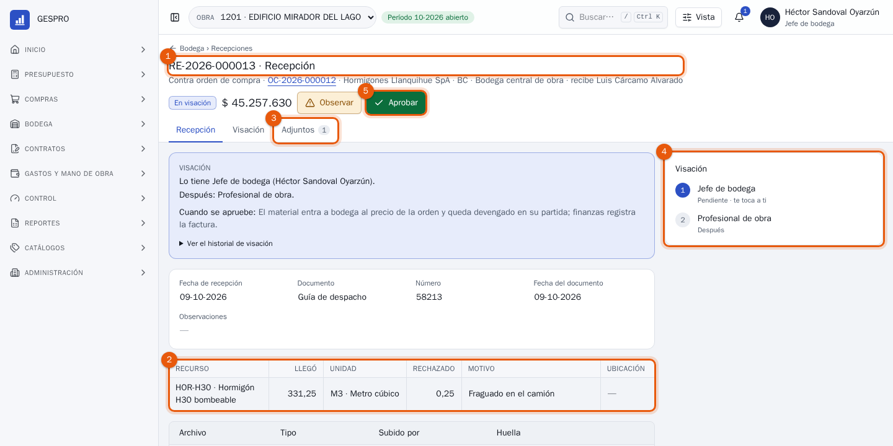
- La recepción: folio, orden, proveedor, bodega y quién recibió. Al lado, su estado y el monto neto aceptado.
- Las líneas: lo que llegó, lo rechazado y por qué.
- Adjuntos: la guía, para compararla con lo registrado.
- La cadena de visación: jefe de bodega y profesional de obra.
- Aprobar. Con la última firma, el material entra a bodega al precio de la orden y queda devengado en su partida; finanzas registra la factura contra esta recepción.
Si algo no cuadra, Observar la devuelve al bodeguero con el motivo. Una recepción confirmada que estaba mal se anula: GESPRO revierte el stock, el costo y el compromiso con fecha de hoy, sin borrar nada.
5Stock y kardex
Bodega › Stock y kardex muestra lo que hay en cada bodega, valorizado a precio promedio ponderado (PPP): cada entrada recalcula el promedio y cada salida se valoriza al promedio de ese momento.
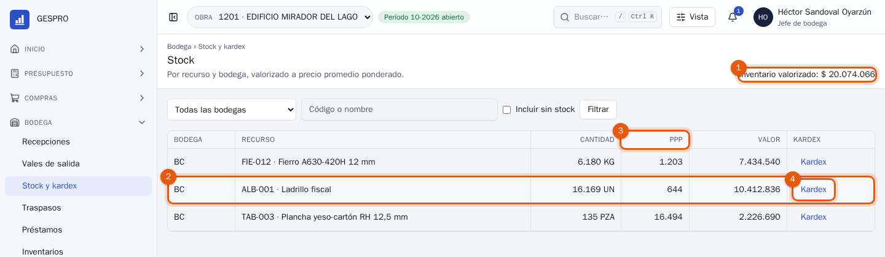
- Inventario valorizado: lo que vale todo lo que hay en bodega.
- Cada recurso por bodega, con su cantidad en la unidad base.
- PPP: el precio promedio con que saldrá la próxima unidad.
- Kardex abre el libro de ese recurso.
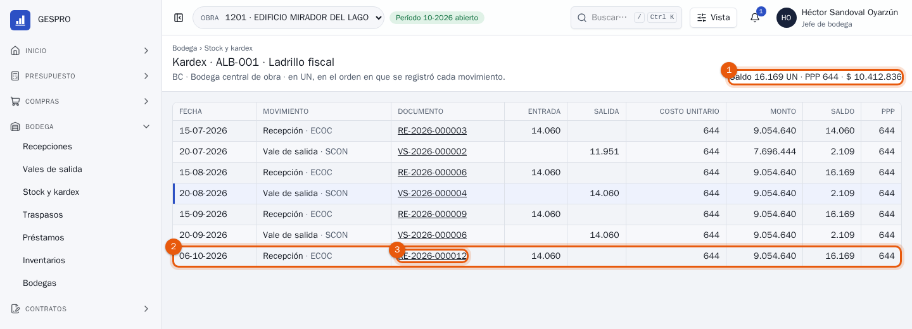
- El saldo: cantidad, PPP y valor de hoy.
- Cada movimiento en el orden en que se registró, con entrada, salida, costo, saldo y PPP después del movimiento.
- El documento que lo originó, para abrirlo.
El kardex no se edita. Un error se corrige con el documento que corresponde: una devolución, una anulación o un ajuste de inventario, y cada uno queda como un movimiento más.
6Entregar con un vale
Todo lo que sale de bodega sale con un vale, a una partida. En Bodega › Vales de salida se crea el vale con la partida que lo consume y quién lo retira.
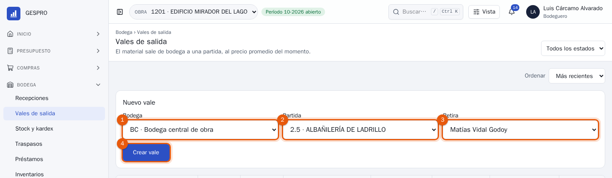
- La bodega de donde sale.
- La partida a la que se carga el costo.
- Quién retira: una persona de la obra, u otra persona cuyo nombre se escribe en el vale.
- Crear vale abre el borrador.
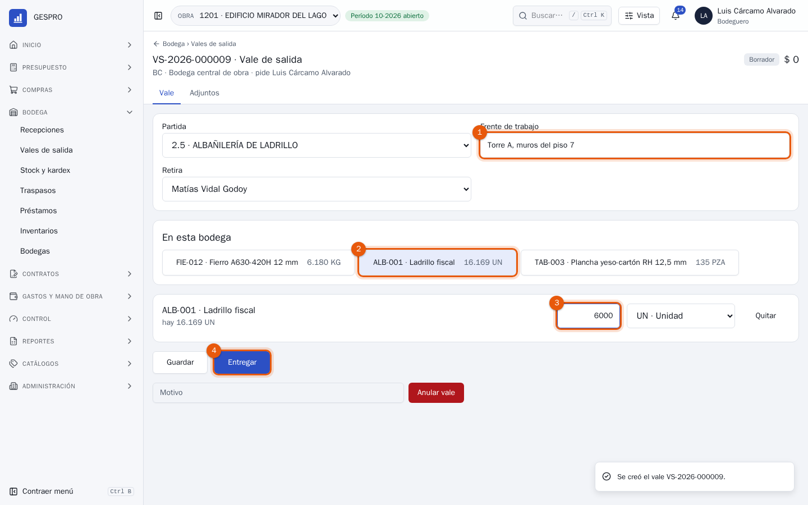
- Frente de trabajo: dónde se usará. Ayuda a explicar el consumo después.
- Lo que hay en esta bodega. Toca un recurso para agregarlo al vale.
- La cantidad que se entrega. No puede pasar de lo que hay.
- Entregar. El vale no se visa: al entregarlo, el costo queda en la partida y el PDF se genera para la firma de quien retira.
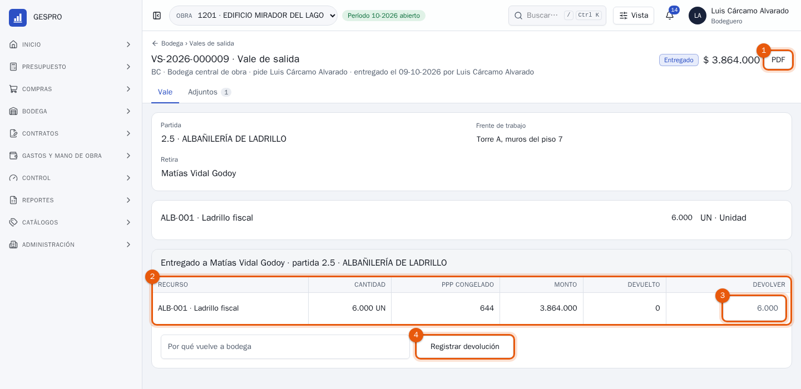
- PDF: el vale para imprimir y firmar. Se guarda como adjunto del vale.
- PPP congelado: el precio con que salió cada recurso. No cambia aunque después entre material más caro o más barato.
- Devolver: si sobró material, la cantidad que vuelve a bodega.
- Registrar devolución, con su motivo. Vuelve al mismo precio con que salió y descuenta el costo de la partida.
7El inventario físico
El inventario compara lo que hay en la bodega con lo que dice GESPRO. Es ciego: quien cuenta no ve la cantidad del sistema, para que no la copie. Lo arma el jefe de bodega, lo cuenta el bodeguero y lo visan el profesional de obra y control de gestión, que no pueden haber contado.
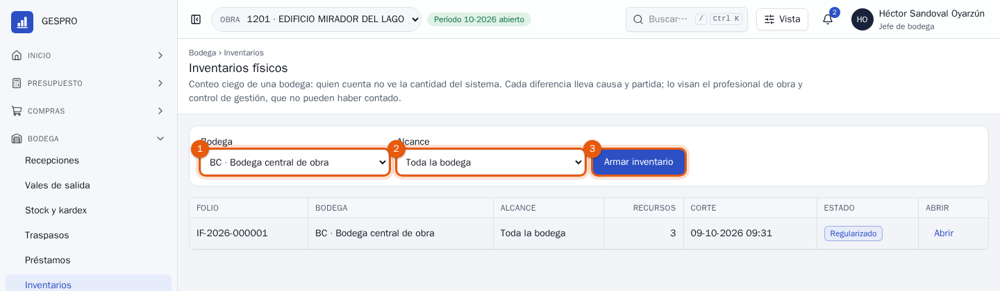
- La bodega que se cuenta.
- El alcance: toda la bodega o una familia de recursos.
- Armar inventario lista los recursos. Antes de empezar se pueden quitar o agregar; al pulsar Empezar el conteo, la cantidad del sistema queda congelada en ese instante.
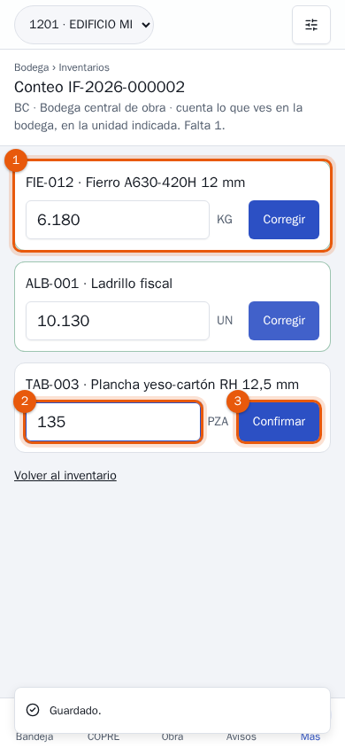
- Una tarjeta por recurso, en verde cuando ya está contado. Está pensado para el teléfono, recorriendo la bodega.
- Lo que se ve en la bodega, en la unidad indicada.
- Confirmar. Se puede corregir mientras el conteo esté abierto.
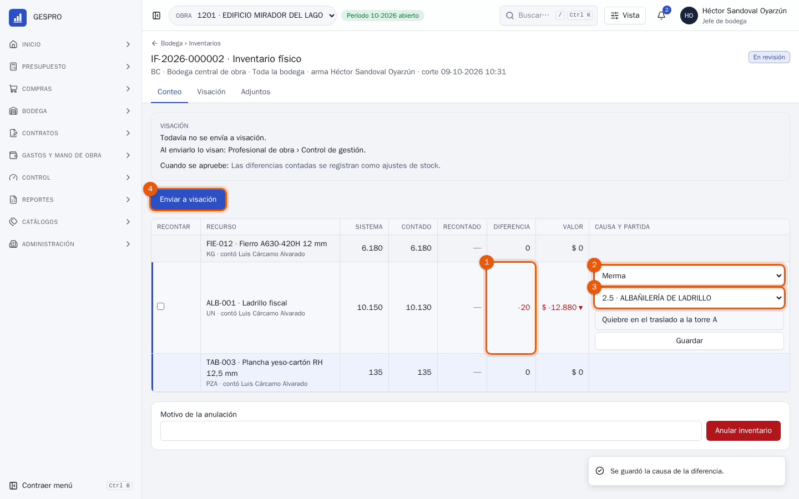
- La diferencia: lo contado menos lo del sistema, y a la derecha su valor al PPP. Si parece un error de conteo, marca la línea en Recontar y vuelve a contarse.
- La causa: merma, pérdida, robo, consumo o devolución no digitados, error de unidad u otra.
- La partida que absorbe la diferencia, con una nota.
- Enviar a visación. Con las firmas, cada diferencia queda como un ajuste de stock y un costo en su partida.
8Traspasos, préstamos y bodegas
- Traspasos (Bodega › Traspasos): mueven material entre dos bodegas de la misma obra, al precio promedio de la de origen. No tocan el costo; los visa el jefe de bodega.
- Préstamos (Bodega › Préstamos): material que sale a otra obra. Sale a su valor y queda en la columna Préstamos del Informe COPRE hasta que se liquida, por devolución o por factura entre obras.
- Bodegas (Bodega › Bodegas): el jefe de bodega crea las bodegas de la obra y sus ubicaciones (estante, patio, contenedor), que se eligen al recibir.
9Preguntas frecuentes
Llegó más de lo que pidió la orden.
Se recibe hasta lo pedido más la tolerancia de la orden; GESPRO lo indica bajo cada línea. Lo que pase de eso no se puede recibir: hay que rechazarlo o pedir a abastecimiento que modifique la orden.
El proveedor trajo la orden en dos camiones.
Haz una recepción por cada llegada. La orden queda recibida en parte con la primera y recibida cuando llega todo.
Hay que devolver material al proveedor.
En la recepción confirmada, indica cuánto devuelves de cada línea y el motivo, y pulsa Devolver al proveedor. Sale de bodega al valor con que entró y el compromiso de la orden vuelve a abrirse.
Me equivoqué de partida en un vale ya entregado.
Registra la devolución del vale y entrega de nuevo con un vale a la partida correcta. Así el kardex y el costo de cada partida cuentan la historia completa.
¿Por qué no veo la cantidad del sistema al contar?
Porque el inventario es ciego. La cantidad del sistema aparece cuando el jefe de bodega termina el conteo y revisa las diferencias.
¿Por qué el hormigón no aparece en el stock?
Porque no se guarda en bodega: se carga directo a su partida al confirmarse la recepción. Qué recurso controla stock lo define el catálogo, no la bodega.